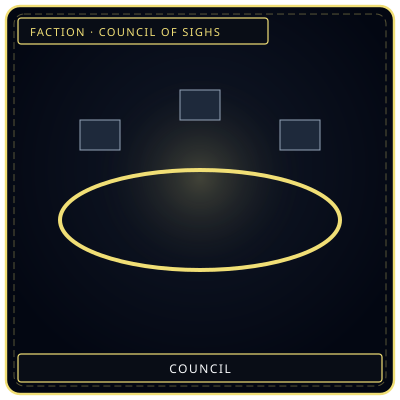
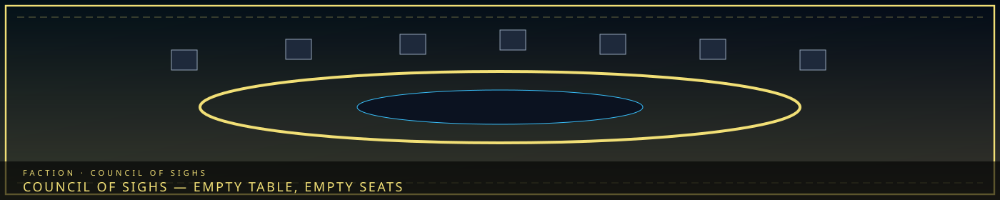
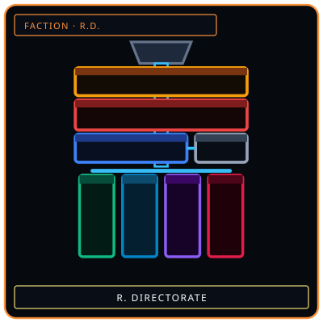
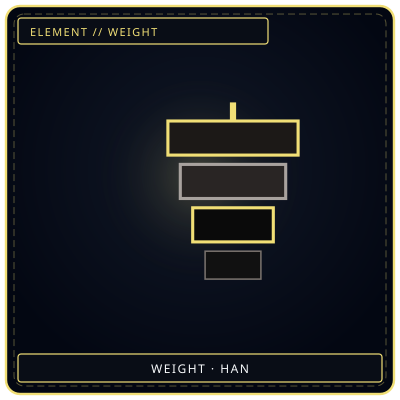

TableEmpty seats
/// RAPID JUMP:
STATUS: ARCHIVE VERIFIED |
CLEARANCE: LEVEL-4 OVERSIGHT |
PROTOCOL: REVERIE DIRECTORATE
ARTICLE
DISCUSSION
SOURCE
HISTORY
YEAR 4,238 · DAWN OF HOPE
FACTION · ZONE A · SIGH PALACE
The Council of Sighs
“A round table. Seats as blocks. No one is drawn sitting.”


R.D.The other table
WeightWhat they bearOverview
The Council of Sighs (한숨의 의회) sits in the Sigh Palace — Building 1 of the Alpha Tree, Zone A. It is Somnarak’s top civil authority, and it is more shock-absorber than throne. Membership is chosen by the weight carried: how much Han a person has absorbed and still not Fractured. Rulers are often the most broken people in the city. Membership is for life, or until the member can no longer bear it.
Philosophy: “This is inevitable. We merely manage the flow of grief.” The Council decides what must happen. The Five Heads decide how. Citizens bear the cost. Sector authorities, not the Palace, govern daily life.
This page is the Council. It is not a paste of every faction-relations table and collapse chapter from PROJECT_SOMNARAK.md. Those belong on the guild articles and on faction technology.
What the Council does
It sets city-wide policy, resolves disputes between Heads, approves or denies major structural changes (new sectors, demolitions), and maintains the city’s relationship with the Dream and the Abyss. It does not police alleys. That is the Wardens. It does not collect Echoes. That is the Collectors.
Weakness: they are chosen for endurance, not wisdom. Many are numb. They resist change because uncertainty creates Han. The Head Architect is the regular opponent — the only Head that pushes reform. Strength: they have survived what would break anyone else. Fatalism here is realism. When they say a thing is inevitable they are speaking from the Cheongula, the Occlusihan, and six thousand years of watching people try to kill sorrow and get eaten.
The Five Heads
Each Head controls a domain, reports to the Council, and operates with real autonomy. Full guild articles:
- Head Architect (건축장) — Architect’s Hall, Building 6. Expansion, repair, Han-flow reroute. The only faction that tries to change the city.
- Head Collector (추징장) — Collector’s Spire, Zone C. Debt, Echo economy, pursuit. The most feared.
- Head Keeper (기록장) — Grand Archive, Building 2. Memory, history, identity. Full article: the Keepers. Do not confuse them with Memory Washers.
- Head Warden (수호장) — Warden’s Citadel. Order, Zone E border, Fracture response.
- Head Weaver (직녀장) — Spire of Dreams, Building 4. Dream-diving, boundary, interpretation.
The Reverie Directorate is funded by the Council and is not a sixth Head. See the Directorate. Giltong report to the Council as Taboo enforcement, parallel to Wardens.
Palace instruments
The Sigh Recorder (한숨 기록기) is a fist-sized crystalline orb. When a Council member sighs, the orb stores the exhaled sorrow as a compressed Echo of the decision that caused it. Playback transfers a fraction of that burden to the listener. Debates use it so the room can feel the weight, not only hear the argument.
The Decision Scale (결정 저울) measures the sorrow a proposed decision will create. It is never wrong, and it only shows sorrow, not joy. A choice that makes people happy and also makes people suffer still tips. The Council has to weigh joy themselves. See faction technology.
What this page is not
It is not “V. Governance — The Fatalistic Order” followed by every relations table, trade matrix, rivalry, collusion cell, and faction-collapse phase list. Those chapters live in source and should be split: relations onto each guild, collapse onto a dedicated article when written, RD/SED/UCD onto the three operations.